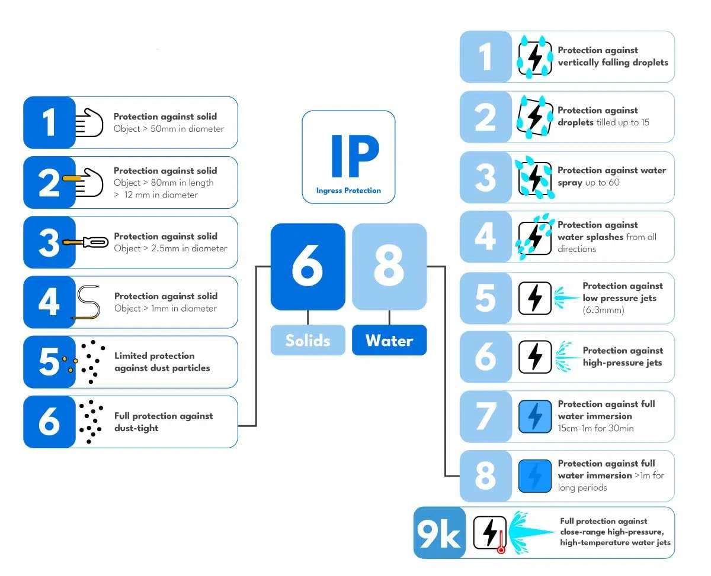
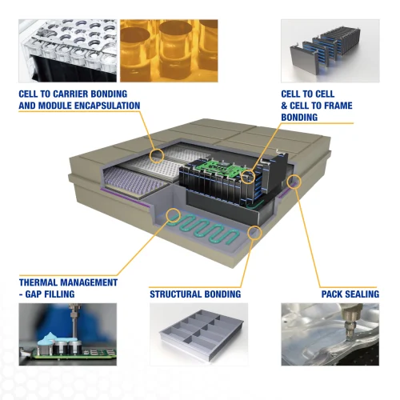
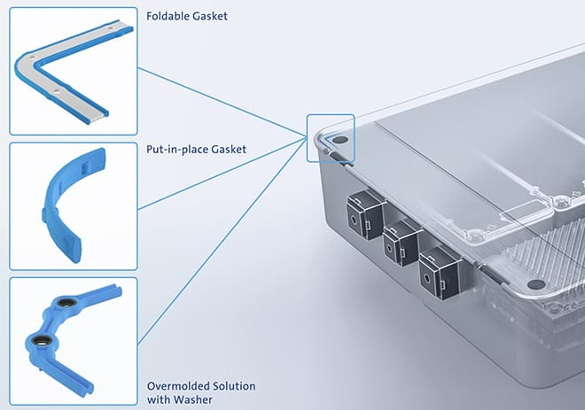

The ability of electric vehicles to withstand water immersion is becoming increasingly important, especially for those designed for off-road or extreme weather conditions. To ensure the safety and performance of battery packs in such environments, rigorous waterproofing measures are essential. This newsletter focuses on the waterproofing of battery packs in EVs, highlighting the challenges, technologies, and innovations in this area.
Why Waterproofing Matters
Water and electricity are a risky combination. If water seeps into an EV’s battery pack, it can cause:
- Short circuits may lead to battery fires or system failures.
- Corrosion of battery components, reducing efficiency and lifespan.
- Potential safety hazards, including thermal runaway, electric shocks, and explosions.
Battery longevity and performance are directly linked to their protection from environmental factors. With EVs operating in diverse climates, from monsoon-prone regions to snowy terrains, maintaining a secure battery enclosure is crucial.
Manufacturers use Ingress Protection (IP) ratings to classify the level of protection against dust and water. Common IP ratings for EV battery packs include:
- IP67: Protected against dust and temporary immersion in water.
- IP68: Can withstand continuous submersion under specific conditions.
- IP69K: Offers the highest level of protection, including resistance to high-pressure water jets.

Challenges in Waterproofing
Sealing an EV battery pack presents multiple challenges due to its size and complexity. Unlike smaller electronic devices, battery packs require extensive sealing across multiple access points while maintaining serviceability.
Thermal management is another critical consideration. While sealing materials must block water intrusion, they should not hinder heat dissipation. Excessive sealing can trap heat, potentially affecting battery efficiency and lifespan.
Additionally, vehicles encounter significant vibrations and impacts from road conditions. These constant movements can degrade seals over time, making it crucial to develop durable sealing solutions that maintain integrity throughout the vehicle's lifespan.
Materials Used for Waterproofing
Manufacturers use various materials to achieve waterproofing, including:
- Sealants and adhesives: Silicone-based materials help seal gaps and prevent leaks.
- Waterproof coatings: Specialized coatings repel moisture and improve durability.
- Enclosures and casings: Sturdy outer shells provide a primary barrier against water ingress.
Sealing Design
- Electrode Spacing: Maintain a sufficient distance between positive and negative electrodes to prevent electrical breakdown.
- Insulation: Use insulating materials like blue film or glue to separate the battery cell shell from the tray.
- Welding and Sealing: Seal welds and connectors with appropriate materials to prevent water penetration.
- Placement: Position the battery pack as high as possible to avoid contact with chassis components and water.
- Connector and Air Vent Placement: Place connector holes and air vents above half the height of the battery box to minimize water exposure.

Waterproofing Techniques in Battery Packs
Common methods to waterproof battery packs include:
- Encapsulation and potting: Filling battery packs with protective compounds to prevent moisture intrusion.
- Gaskets and O-rings: Placed around battery compartments to create a water-tight seal.
- Integration with thermal management: Using heat-dissipating materials that also enhance waterproofing.

Testing for Waterproofing Efficiency
To ensure battery packs are properly sealed, manufacturers conduct:
- Air Tightness Test: Inflate the battery box with air and monitor pressure changes to detect leaks.
- Water Immersion Test: Fully submerge the battery box in water and check for water ingress.
- Differential Pressure Method: Measure pressure changes in the battery box to determine air tightness.
- Mass Flow Method: For larger volumes and lower leakage requirements, use a mass flow sensor to measure gas flow.
Innovations in Waterproofing Technologies
Advancements in waterproofing include:
- Nanocoatings: Ultra-thin layers providing superior moisture protection.
- Self-healing materials: Polymers that automatically repair small damages.
- Smart sealing techniques: Adaptive sealing systems that adjust based on environmental changes.
Practical Considerations
For EV owners, understanding how to protect their battery pack from water damage is crucial. Here are some key tips:
- If your EV has been exposed to deep water or flooding, do not attempt to restart the vehicle. Seek professional inspection to assess potential damage.
- Regularly check for signs of wear or damage on the battery casing and seals, and schedule maintenance if needed.
- Avoid high-pressure washing directly around the battery pack area to prevent accidental water ingress.
Regulatory Standards
Regulatory bodies have set standards for EV battery packs to withstand water exposure. For example, Chinese regulators mandate that battery packs should be able to withstand immersion in one meter of water for 30 minutes without damage or safety issues. Most EV manufacturers comply with these standards to ensure safety and reliability.
Conclusion
The waterproofing of battery packs in electric vehicles is a critical aspect of their design, ensuring safety and reliability in various environmental conditions. As technology continues to evolve, we can expect even more robust and efficient solutions to emerge, further enhancing the appeal and practicality of EVs.